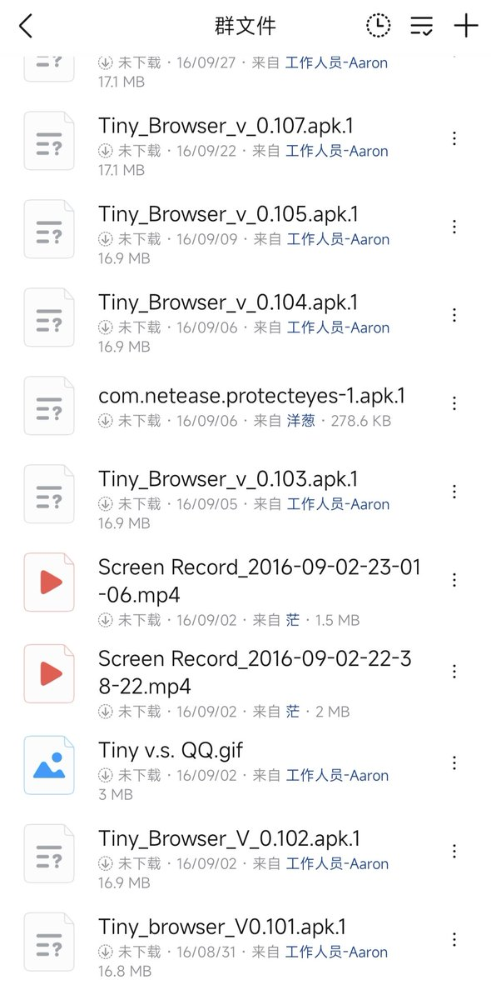
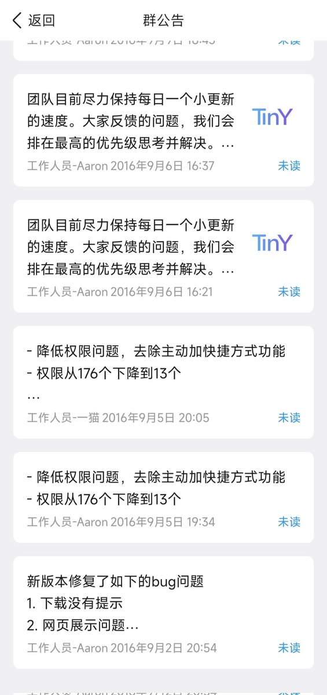
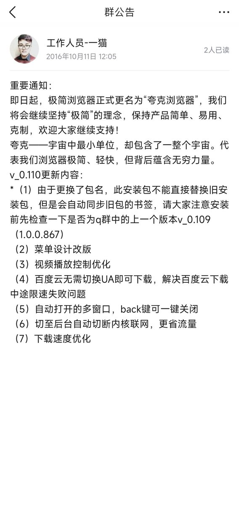

@angine04 Quark browser really a pity... I was one of its fir usrs. Now my Android browser only has via, chrome, & brave.




我16年开始使用夸克，是最早一批用户。当时叫极简浏览器，如其名，大刀阔斧地精简了功能和ui，真正是“小而美”。团队成员在粉丝群里直接和用户交流，后来甚至一起聊科技，刷机，ROM，其乐融融。
后来公司发现了这个项目。
结局我们都知道了。
曾经还有一个浏览器，叫做千寻。
后来变成了百度浏览器。 https://t.co/Ehs76A2kfW https://t.co/MDcAS2hJJ3
后来公司发现了这个项目。
结局我们都知道了。
曾经还有一个浏览器，叫做千寻。
后来变成了百度浏览器。 https://t.co/Ehs76A2kfW https://t.co/MDcAS2hJJ3